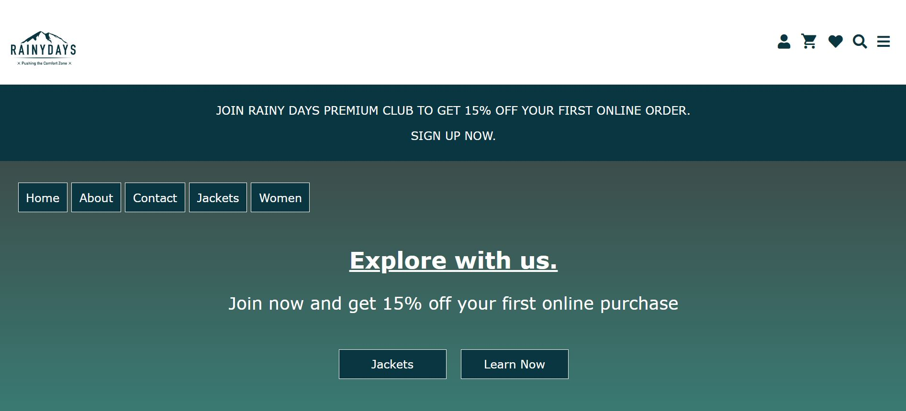

WELCOME TO MY PORTFOLIO SITE
On this page you can take a look at my three previous major projects from my first year at studying Front-End at Noroff. Click on them and have a look at each site, hope you have a good experience.
My Portfolio
Rainy Days
This site is called "Rainy Days" It is my first project at Noroff, it`s a e-commerce store where users can buy Rainy Days outdoor jackets.